בוגר הטכניון באדריכלות ובינוי ערים, שהתמחה אצל משה ספדיה בירושלים ובלונדון, ומנהל משרד עצמאי מאז 1984. מתכנן בתים פרטיים, בנייני מגורים, מבני ציבור ומסחר — ומוביל תוכניות מתאר עירוניות בישראל.
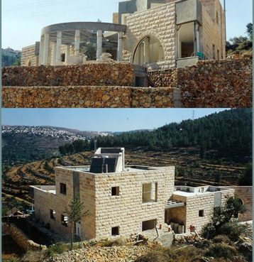
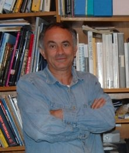
מיכאל וקנין הוא אדריכל ומתכנן ערים, בוגר הטכניון — המכון הטכנולוגי של ישראל (B.Sc, 1982). את דרכו המקצועית החל במשרד משה ספדיה ושות׳ בירושלים (1981–1983), המשיך במשרד אדנה ורפאל לרמן ושות׳ בתל אביב (1986–1987) ובמשרד איגל יבץ ושות׳ בלונדון (1987–1988).
מאז 1984 הוא מנהל משרד עצמאי, ובין 1989 ל-2003 פעל בשותפות עם האדריכל אייל שער. המשרד, השוכן בבית זית שבהרי ירושלים, מתכנן בתים פרטיים, בנייני מגורים, מלונות, מבני ציבור, מסחר ותעשייה — לצד תוכניות מתאר ובינוי ערים. במקביל עסק וקנין במחקר על גני ילדים ירוקים המופעלים באנרגיה סולארית פסיבית, והשתתף בעשרות תחרויות אדריכלות בישראל ובעולם.
תכנון בתים צמודי קרקע וקוטג׳ים, מבתים ביישובי הסביבה ועד מרכזי ערים.
בנייני דירות ומתחמי מגורים, בעיקר בירושלים ובסביבתה.
מבני מסחר, משרדים, מרכזי היי-טק ומתקני תעשייה וייצור.
בתי ספר, גני ילדים, בתי כנסת, בתי אבות ומבני חינוך.
תכנון חללים פנימיים למסחר, למוסדות ולמגורים.
תוכניות מתאר, שכונות חדשות ותוכניות כלליות לערים ולאזורים.
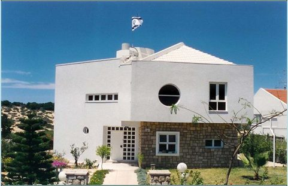
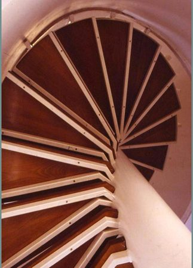
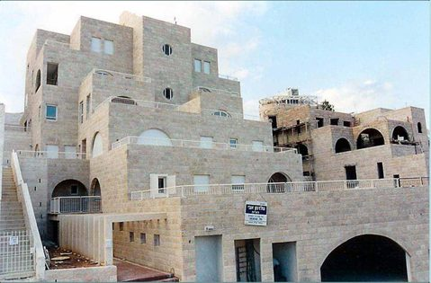
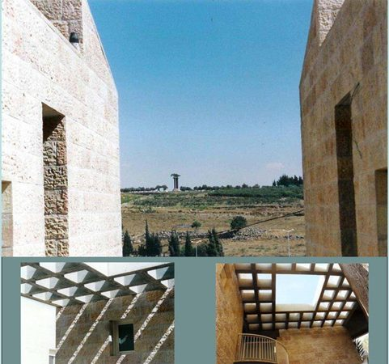
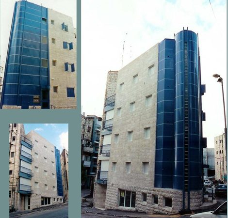
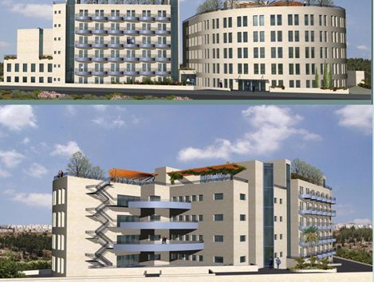
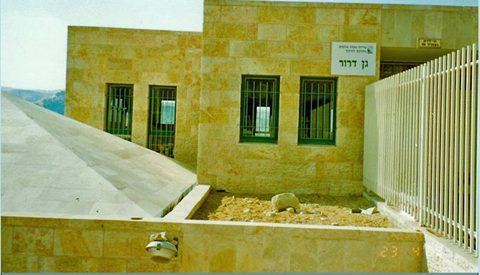
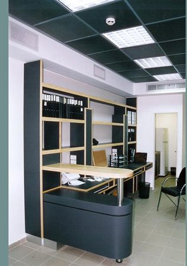
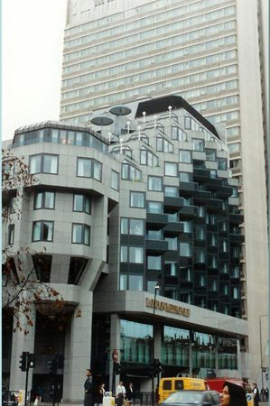
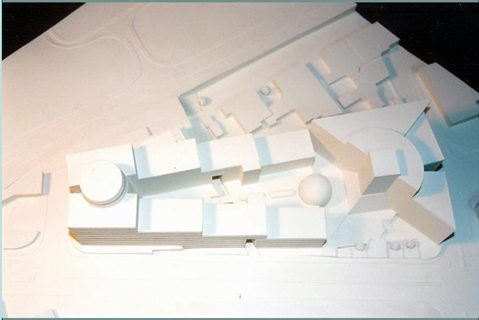
בנוסף, השתתף וקנין בעשרות תחרויות אדריכלות בינלאומיות — בהן ביפן, איטליה, מרוקו, צרפת ובולגריה — ובתחרויות על תכנון בניין בית המשפט העליון, אנדרטת יד ושם ומוזיאון טבע בירושלים.
בית פרטי, בניין מגורים, מבנה ציבורי או תוכנית מתאר — שיחה קצרה היא הדרך הטובה ביותר להתחיל.